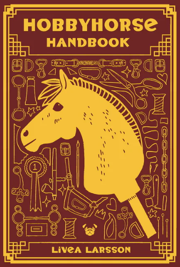

Ursprünge & Entwicklung
Hobby Horses gibt es schon seit Jahrhunderten als Kinderspielzeug. Doch erst in den frühen 2000er-Jahren entwickelte sich in Finnland eine neue Sportform daraus: das moderne Hobbyhorsing. Jugendliche begannen, Dressur- und Springreiten mit selbstgebauten Steckenpferden nachzuahmen – kreativ, sportlich und mit Leidenschaft.

Wichtige Fakten
| Aspekt | Information |
|---|---|
| Ursprung | Finnland, ca. 2000 |
| Zielgruppe | Vor allem Jugendliche (aber für alle geeignet) |
| Bekanntheit | Weltweit durch soziale Medien |
| Disziplinen | Springen, Dressur, Freestyle |